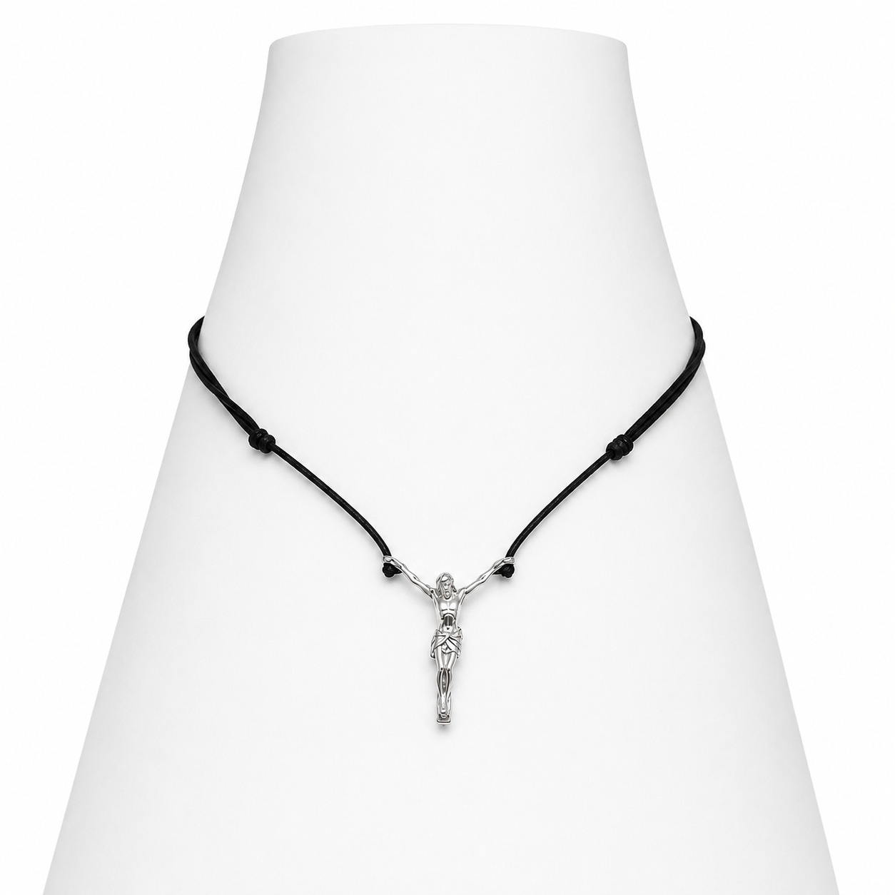
01
Daily Edit
Peças claras, leves e fotogênicas para produções casuais.
Elegância brasileira
Acessórios com presença elegante, linhas limpas e versatilidade para looks casuais ou formais.
Catálogo completo
Filtre por categoria, busque pelo nome ou abra os detalhes para escolher cor e quantidade.
Categorias

Peças claras, leves e fotogênicas para produções casuais.
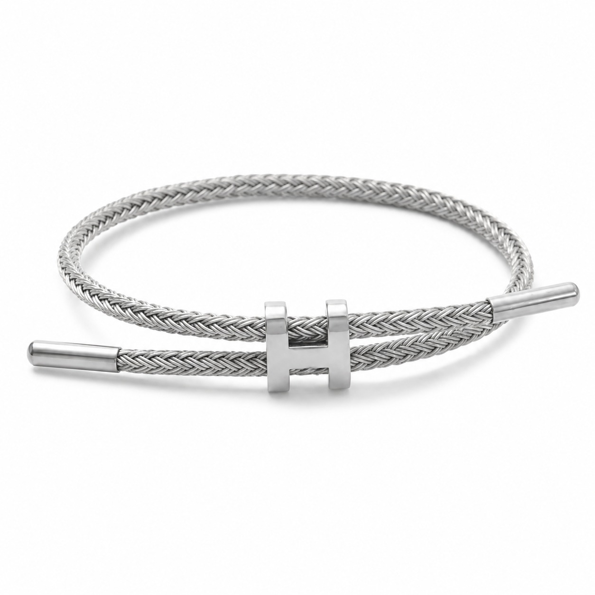
Acabamentos resistentes e minimalistas.
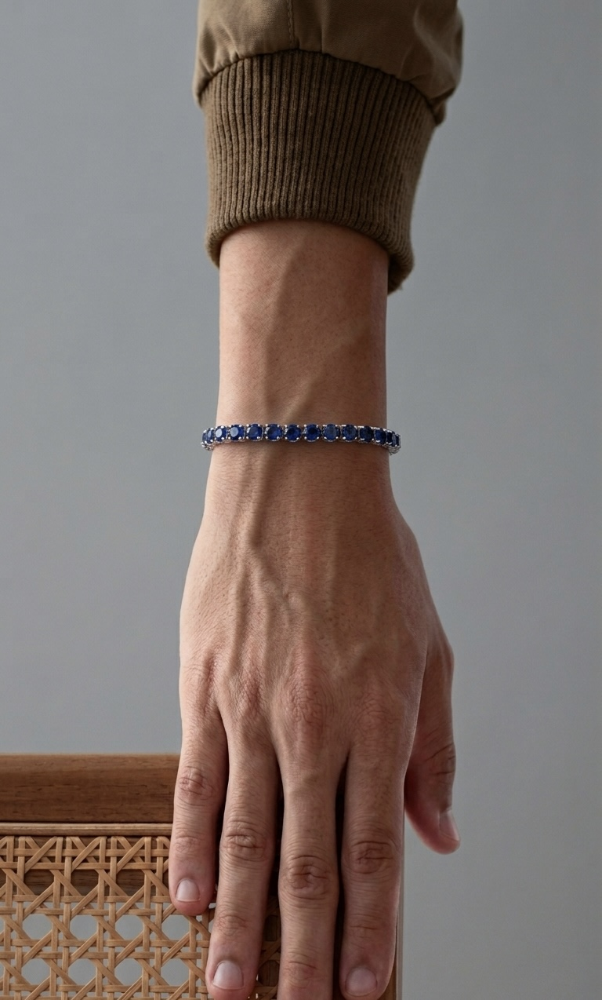
Minimalismo para looks urbanos e elegantes.
Quem Usa
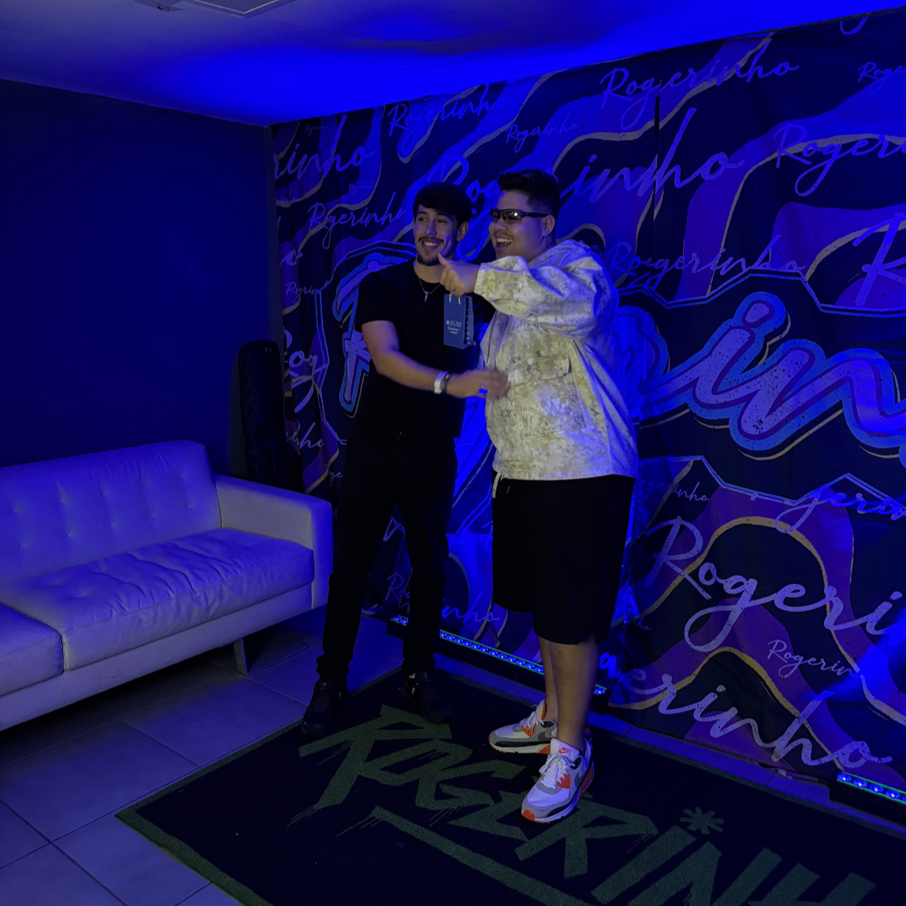
Registros SEORF
Todos os registros em uma única faixa.

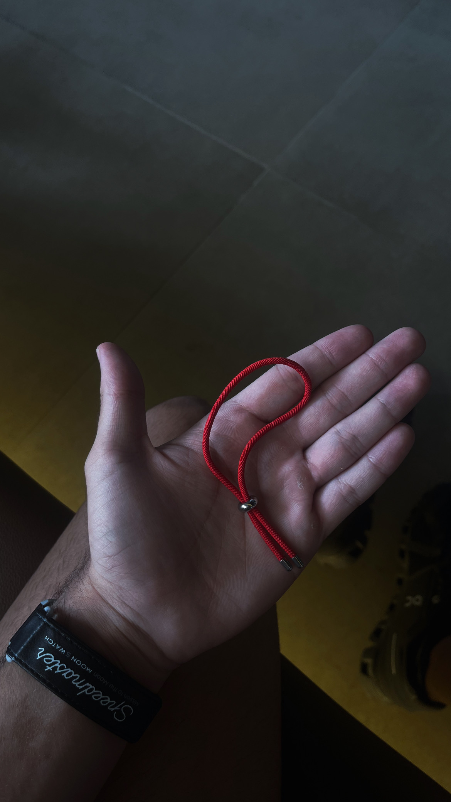
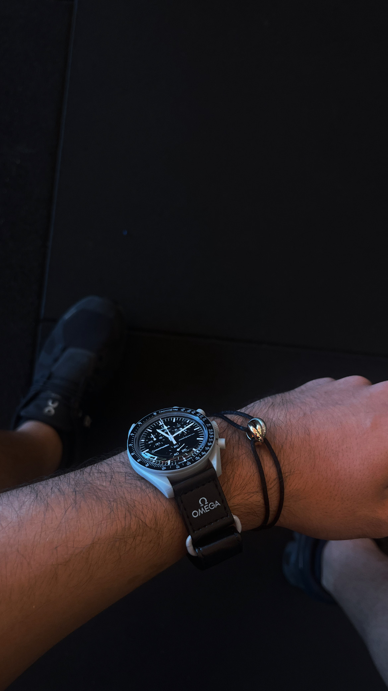

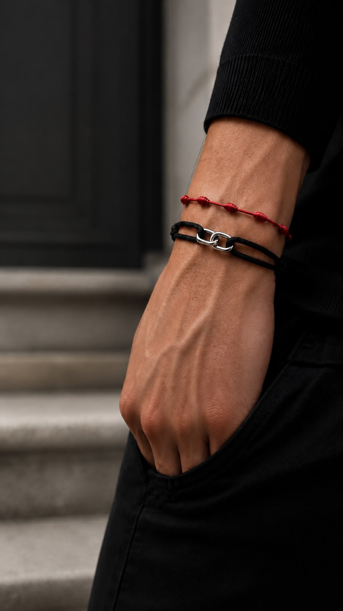

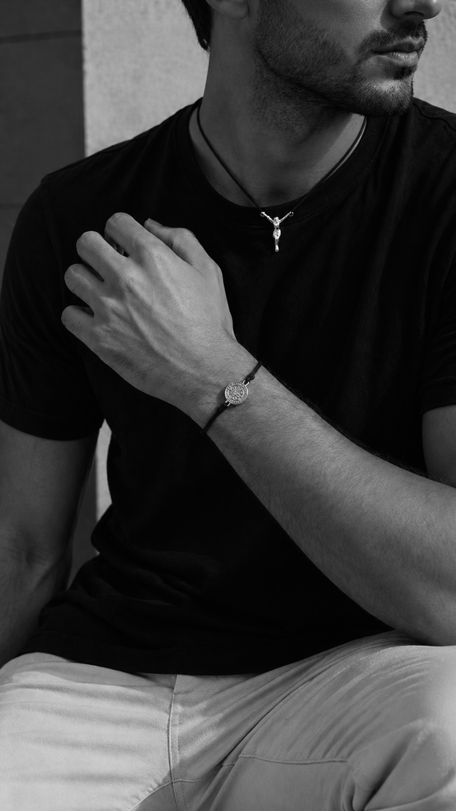

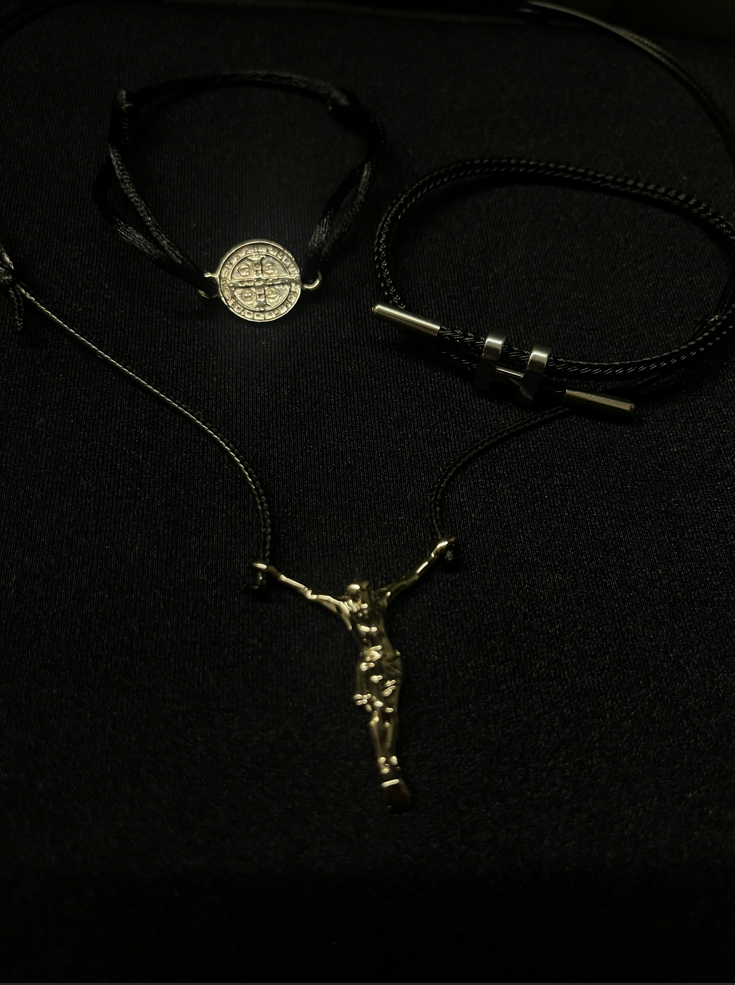

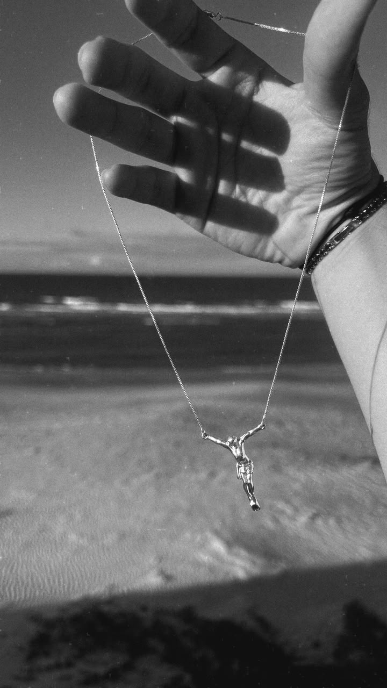
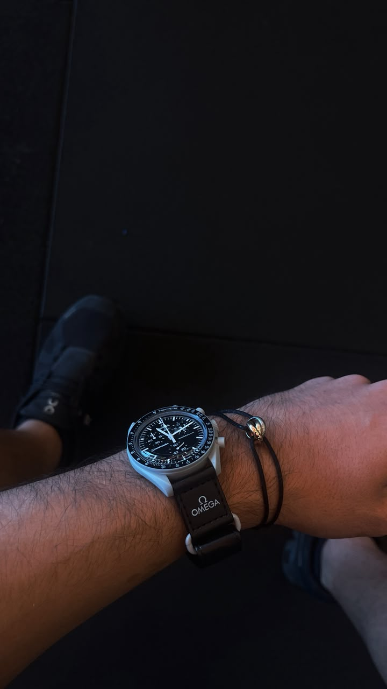
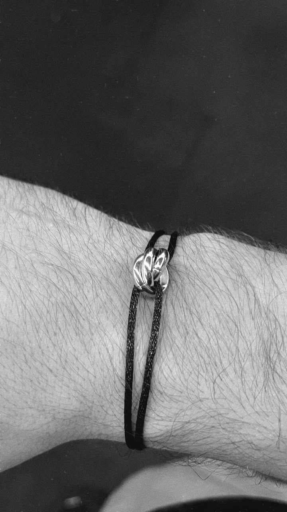
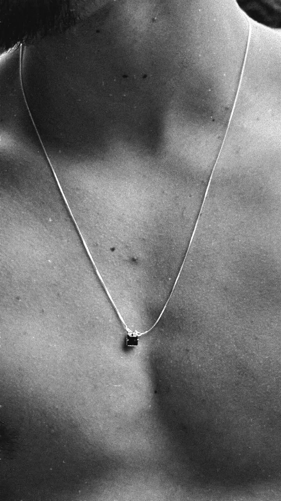
@useseorf
Um feed pensado para detalhes de produto, composição visual e referências de estilo com a assinatura SEORF.
Abrir InstagramSobre a marca
A proposta da SEORF é criar uma experiência visual mais madura para quem quer comprar acessórios com estilo, praticidade e uma sensação clara de exclusividade.
FAQ
Adicione ao carrinho e envie pelo WhatsApp. Confirmamos disponibilidade, entrega e pagamento por lá.
Sim. A curadoria prioriza peças versáteis para rotina, compromissos e produções mais alinhadas.
Sim. Pelo WhatsApp ou Instagram indicamos modelos conforme seu estilo e ocasião.